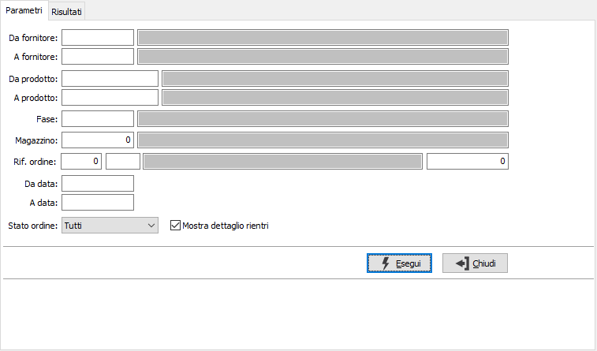
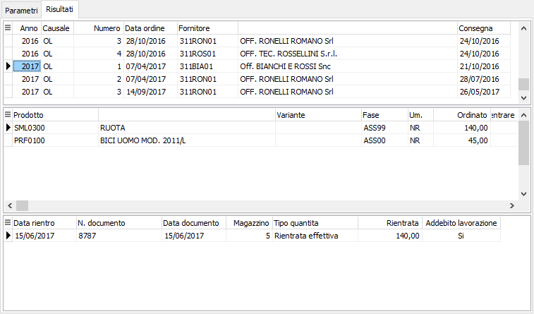

Analisi rientro ordini
Il programma consente di presentare la situazione degli ordini ancora aperti, mentre per quelli già rientrati riporta il dettaglio dei movimenti di rientro. E’ possibile selezionare solo gli ordini rientrati, da rientrare oppure tutti gli ordini.
Il programma si articola su due finestre video. La prima, Parametri, consente la definizione dei parametri di analisi.

DA FORNITORE: eventuale codice del fornitore, presente in anagrafica fornitori, da cui si vuole iniziare la selezione di analisi. Confermando a vuoto, la selezione inizia dal primo fornitore valido. Sul campo sono attive le funzioni di ricerca (F9).
A FORNITORE: eventuale codice del fornitore, presente in anagrafica fornitori, con cui si vuole terminare la selezione di analisi. Confermando a vuoto, la selezione termina con l’ultimo fornitore valido. Sul campo sono attive le funzioni di ricerca (F9).
DA PRODOTTO: eventuale codice dell'articolo, presente in anagrafica prodotti, da cui si desidera iniziare la selezione di analisi. Confermando a vuoto, la selezione inizia con il primo prodotto valido. Sul campo sono attive le funzioni di ricerca (F9).
A PRODOTTO: eventuale codice dell'articolo, presente in anagrafica prodotti, a cui si desidera terminare la selezione di analisi. Confermando a vuoto, la selezione termina con l’ultimo prodotto valido. Sul campo sono attive le funzioni di ricerca (F9).
FASE: eventuale codice della fase di lavorazione, per cui si desidera effettuare la selezione di analisi. Confermando a vuoto, la selezione considera tutte le fasi di lavorazione. Sul campo sono attive le funzioni di ricerca (F9).
MAGAZZINO: eventuale codice del magazzino a cui si vuole restringere la selezione di analisi. Sul campo sono attive le funzioni di ricerca (F9) sulla tabella omonima.
DA DATA: eventuale data del documento da cui deve iniziare l’analisi dei documenti relativamente ai precedenti parametri di selezione. Confermando a vuoto, l’analisi inizia con il primo documento valido.
A DATA: eventuale data del documento con cui si desidera terminare l’analisi dei documenti relativamente ai precedenti parametri di selezione. Confermando a vuoto, l’analisi si conclude con l'ultimo documento valido.
STATO ORDINI: combo box per definire lo stato degli ordini da selezionare. Valori ammessi: tutti, da rientrare oppure solo rientrati.
MOSTRA DETTAGLIO RIENTRI: se spuntata mostra il dettaglio dei rientri effettuati a fronte dell'ordine.
Confermando tramite pressione del bottone Esegui, viene avviata la selezione e richiamata la finestra video Risultati.

La finestra video è articolata su tre sezioni: la prima sezione elenca le teste degli ordini selezionati, la seconda sezione elenca le righe dell'ordine selezionato, che è quello contrassegnato dalla freccia, a sinistra del rigo nella sezione superiore. La terza sezione, presente solo se è stato spuntato il parametro "Mostra dettaglio rientri", riporta, per il rigo ordine selezionato, gli eventuali movimenti di rientro che lo riguardano; facendo doppio clic con il mouse sulla prima sezione, in corrispondenza di un determinato ordine si richiama la manutenzione dello stesso.
Dalla pagina Risultati, tramite i pulsanti presenti nella Toolbar sarà possibile effettuare la stampa.